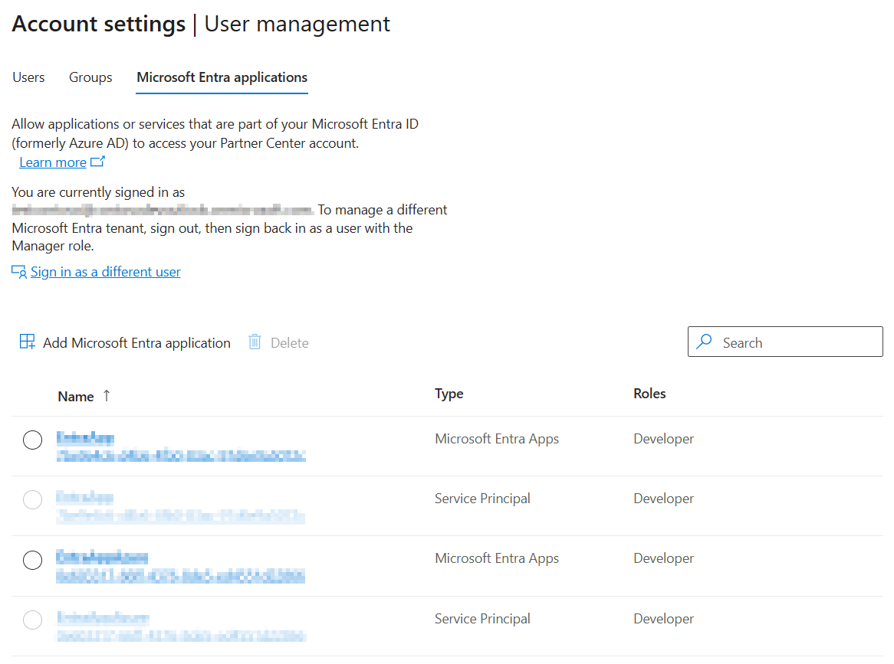
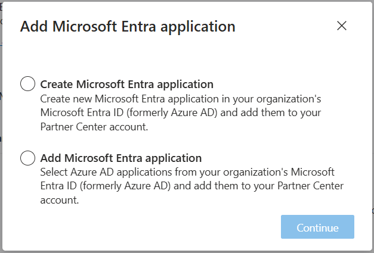

Manage Microsoft Entra applications in your Partner Center account
You can allow applications or services that are part of your organization's Microsoft Entra ID to access your Partner Center account. These Microsoft Entra application user accounts can be used to call the REST APIs provided by the Microsoft Store services.
To manage Microsoft Entra applications in your Partner Center account, go to the User management page under Account settings and select the Microsoft Entra applications tab. You must be signed in with a Manager account that also has global administrator permissions for the Microsoft Entra ID tenant you're working in.

To add applications, you will have additional options described below.

Create Microsoft Entra application
- From the User management page (under Account settings), click on Add Microsoft Entra application, then choose Create Microsoft Entra application.
- Enter the display name for the new application.
- Enter the Reply URL for the new application. This is the URL where users can sign in and use your Microsoft Entra application (sometimes also known as the App URL or Sign-On URL). The Reply URL can't be longer than 256 characters and must be unique within your directory. Then click Next.
- In the Roles applicable to developer programs section, specify the role(s) or customized permissions for the application.
- Click Create.
After you add or create a Microsoft Entra application, you can return to this section and select the application name to review settings for the application, including the Tenant ID, Client ID, and Reply URL.
Note
If you intend to use the REST APIs provided by the Microsoft Store services, you will need the Tenant ID and Client ID values shown on this page to obtain a Microsoft Entra access token that you can use to authenticate the calls to services.
Add Microsoft Entra application
From the User management page (under Account settings), click on Add Microsoft Entra application, then choose Add Microsoft Entra application.
Select one or more Microsoft Entra applications from the list that appears. You can use the search box to find specific applications.
Tip
If you select more than one Microsoft Entra application to add to your Partner Center account, you must assign them the same role or set of custom permissions. To add multiple Microsoft Entra applications with different roles or permissions, repeat these steps for each role or set of custom permissions.
When you have finished selecting applications, click Next.
In the Roles applicable to developer programs section, specify the role(s) or customized permissions for the selected application(s).
Click Add.
Manage keys for a Microsoft Entra application
If your Microsoft Entra application reads and writes data in Microsoft Entra ID, it will need a key. You can create keys for a Microsoft Entra application by editing its info in Partner Center. You can also remove keys that are no longer needed.
From the User management page (under Account settings), click on the Microsoft Entra application.
Tip
When you click on the name of the Microsoft Entra application, you'll see all of the active keys for the Microsoft Entra application, including the date on which the key was created and when it will expire. To remove a key that is no longer needed, click on Remove.
To add a new key, click on Add new key.
You will see a screen showing the Client ID and Key values.
Important
Be sure to print or copy this info, as you won't be able to access it again after you leave this page.
If you want to create more keys, select Add another key.
Edit a Microsoft Entra application
- From the User management page (under Account settings), click on the Microsoft Entra application that you want to edit.
- You will see a screen showing all the available keys, then click Cancel.
- Make your desired changes. For a Microsoft Entra application, you can enter new values for the display name and Reply URL. Remember that these changes will be made in your organization's directory as well as in your Partner Center account.
- When you have finished updating the application information, click Next.
- For changes related to Partner Center access, select or deselect the role(s) that you want to apply, or select Customize permissions and make the desired changes. These changes only impact Partner Center access and will not change any permissions within your organization's Microsoft Entra ID tenant.
- Click Update.
Important
Changes made to roles or permissions will only affect Partner Center access. All other changes (such as changing a user's name or group membership, or the Reply URL for a Microsoft Entra ID application) will be reflected in your organization's Microsoft Entra ID tenant as well as in your Partner Center account.
Remove a Microsoft Entra application
- From the User management page (under Account settings), select the Microsoft Entra application that you want to remove.
- Click on Delete.
- After confirming the removal, that Microsoft Entra application will no longer have access to your Partner Center account (unless you add it again later).
Important
Removing a Microsoft Entra application means that it will no longer have access to your Partner Center account. It doesn't delete the Microsoft Entra application from your organization's directory.